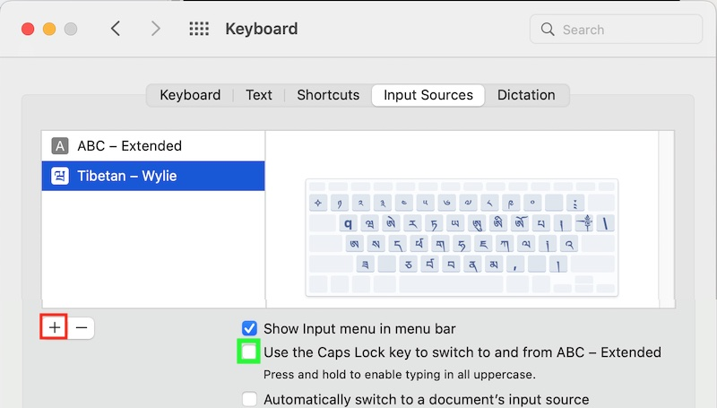
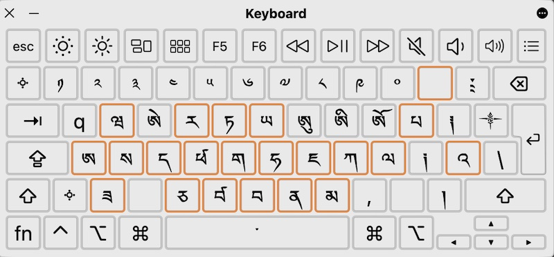

Working with macOS and Tibetan script
Contents
Working with macOS and Tibetan script¶
Tibetan support works equally well for old Intel Macs and the new Apple Silicon based Macs.
The Mac comes with Tibetan fonts preinstalled. For more fonts, see Tibetan fonts.
Tibetan keyboard¶
{kind=link}
To activate a Tibetan keyboard, start System Preferences and select Keyboard, Input Sources. Press the +-Icon (marked in red in the image) and add the Tibetan - Wylie keyboard.
{kind=link}
Make sure that Show Input menu in menu bar is enabled so that you can easily switch keyboards by clicking the input-menu icon in the menu bar.
Newer Mac hardware keyboards have a globe icon 🌐 that can be used to switch between the Tibetan keyboard and your usual keyboard.
Warning
macOS implementation of Wylie is currently quite broken. The <shift>-key to access Sanskrit variants doesn’t work currently, and one needs to use CAPS LOCK to access those. Additionally, the = is used as non-standard stacking-key. So make sure that CAPS LOCK is not assigned to other functionality, like switching input methods.
{kind=link}
Chose a keyboard-switcher hotkey¶
You can assign an arbitrary hotkey to switch between the keyboards: In System Preferences, Keyboard, select Shortcuts and Input Sources. There either enable the suggested shortcut, or click on the proposed shortcut to enter a new key-combination.
Activating the Tibetan keyboard¶
You should now be able to either select the current keyboard by hotkey, or by clicking the input-source icon in the menu bar.
How to type Tibetan Wylie EWTS¶
{kind=link}
For an overview how Tibetan is transliterated as Wylie, checkout Wikipedia Wylie transliteration.
Some easy examples with Tibetan - Wylie keyboard enabled:
to type སེམས་ཅན་ཐམས་ཅད།, type
sems can thams cad/to type རྒྱུ་, simply type
rgyuགཡུ is
g.yu, གྱུ isgyu.
Since macOS Wylie input method is Wylie in name-only, it makes sense to activate the Show Keyboard Viewer in the input selector menu-bar icon.
The Caps lock key makes Sanskrit and special symbols available, while the = key supports non-standard stacking.
It might be necessary to experiment a bit with the keyboard viewer active.
Here are the special layouts:
After selecting caps-lock:
{kind=link}
after selecting caps-lock and =:
{kind=link}
after selcting caps-lock, =, and caps-lock:
{kind=link}
Some examples:
So currently, to type ཌྜྷི, one types
<caps lock> d = d = <caps lock> h i.༄༅། ། is
<caps lock> 2 3 <caps lock> / <caps lock> <space> <space> <caps lock> /ཨོཾ་ཨཱཿཧཱུཾ༔ is
o <caps lock> m <caps lock> <space> <caps lock> ah <caps lock> h <caps lock> um :
Not quite the standard way to do things…
Apple is working on a bug-report…
Sanskrit diacritics¶
Working with dharma materials often requires access to diacritics. For those who are using an English QWERTY layout, the Apple keyboard ABC - Extended provides easy access to virtually all diacritics imaginable, including IAST Sanskrit transliteration. Install this keyboard from System Preferences, Keyboard, Input Sources and add the ABC - Extended keyboard just as you did with the Tibetan keyboard.
{kind=link}
Some examples for Sanskrit:
Note: ⌥ is the right option key, it is always the first key in diacritics sequences with the ABC - Extended keyboard. Again, enable Show Keyboard Viewer in the input-method selector in the menu bar, and as soon as the right option key ⌥ is pressed, all available diacritics are shown.
ā |
ī |
ū |
Ā |
Ī |
Ū |
|---|---|---|---|---|---|
⌥aa |
⌥ai |
⌥au |
⌥aA |
⌥aI |
⌥aU |
ḍ |
Ḍ |
ḥ |
Ḥ |
ḷ |
Ḷ |
|---|---|---|---|---|---|
⌥xd |
⌥xD |
⌥xh |
⌥xH |
⌥xl |
⌥xL |
ñ |
Ñ |
ṇ |
Ṇ |
ṅ |
Ṅ |
|---|---|---|---|---|---|
⌥nn |
⌥nN |
⌥xn |
⌥xN |
⌥wn |
⌥wN |
ṃ |
Ṃ |
ṛ |
Ṛ |
ś |
Ś |
|---|---|---|---|---|---|
⌥xm |
⌥xM |
⌥xr |
⌥xR |
⌥es |
⌥eS |
ṣ |
Ṣ |
ṭ |
Ṭ |
|---|---|---|---|
⌥xs |
⌥xS |
⌥xt |
⌥xT |